Статистика обращений к greenbro.net
Статистика обращений к greenbro.net
Программа стартовала в вт. 31 дек 2019 15:58.
Анализ обращений к серверу с пн. 3 дек 2018 22:13 по вт. 31 дек 2019 12:46 (392,61 дней).
Статистика обращений к greenbro.netПрограмма стартовала в вт. 31 дек 2019 15:58.
Анализ обращений к серверу с пн. 3 дек 2018 22:13 по вт. 31 дек 2019 12:46 (392,61 дней).
(Переход: Вверх | Основная Информация | Статистика по месяцам | Статистика по дням недели | Статистика по времени суток | Статистика по доменам | Статистика по организациям | Статистика по перенаправляющим ссылкам | Статистика отказов по ссылкам | Статистика по ссылающимся сайтам | Статистика по браузерам (подробная) | Статистика по браузерам (суммарная) | Статистика по операционным системам | Статистика по коду возврата | Статистика по размерам файлов | Статистика по типам файлов | Статистика по директориям | Статистика по запросам)
Запись в круглых скобках - данные за 7 дней до 31 дек 2019 15:58.
Успешных обращений: 13 354 (2)
Среднее кол. успешных обращений в день: 34 (0)
Успешных обращений к страницам: 3 519 (2)
Среднее кол. успешных обращений к страницам в день: 8 (0)
Неуспешных запросов: 9 735 (0)
Перенаправленных запросов: 6 904 (11)
Количество запрошенных файлов: 155 (1 466)
Количество обслуженных хостов: 1 656 (3 814)
Данных передано: 137,01 мегабайт (47,73 килобайт)
Среднее кол. переданных данных в день: 357,35 килобайт (6,82 килобайт)
(Переход: Вверх | Основная Информация | Статистика по месяцам | Статистика по дням недели | Статистика по времени суток | Статистика по доменам | Статистика по организациям | Статистика по перенаправляющим ссылкам | Статистика отказов по ссылкам | Статистика по ссылающимся сайтам | Статистика по браузерам (подробная) | Статистика по браузерам (суммарная) | Статистика по операционным системам | Статистика по коду возврата | Статистика по размерам файлов | Статистика по типам файлов | Статистика по директориям | Статистика по запросам)
Каждый символ ( ) отображает 25 обращений к страницам или около этого.
) отображает 25 обращений к страницам или около этого.
| месяц | запросы | страниц | |
|---|---|---|---|
| дек 2018 | 584 | 372 |    |
| янв 2019 | 488 | 376 |  |
| фев 2019 | 566 | 543 | |
| мар 2019 | 840 | 456 | |
| апр 2019 | 3490 | 445 | |
| мая 2019 | 2425 | 431 | |
| июн 2019 | 4839 | 859 |  |
| июл 2019 | 25 | 12 | |
| авг 2019 | 7 | 7 | |
| сен 2019 | 79 | 11 | |
| окт 2019 | 0 | 0 | |
| ноя 2019 | 4 | 3 | |
| дек 2019 | 7 | 4 | |
Наибольшее количество обращений в июн 2019 (859 обращений к страницам).
(Переход: Вверх | Основная Информация | Статистика по месяцам | Статистика по дням недели | Статистика по времени суток | Статистика по доменам | Статистика по организациям | Статистика по перенаправляющим ссылкам | Статистика отказов по ссылкам | Статистика по ссылающимся сайтам | Статистика по браузерам (подробная) | Статистика по браузерам (суммарная) | Статистика по операционным системам | Статистика по коду возврата | Статистика по размерам файлов | Статистика по типам файлов | Статистика по директориям | Статистика по запросам)
Каждый символ () отображает 20 обращений к страницам или около этого.
| день | запросы | страниц | |
|---|---|---|---|
| вс. | 2525 | 629 | |
| пн. | 1509 | 619 | |
| вт. | 3642 | 683 | |
| ср. | 1599 | 453 | |
| чт. | 2333 | 371 | |
| пт. | 947 | 356 | |
| сб. | 799 | 408 | |
(Переход: Вверх | Основная Информация | Статистика по месяцам | Статистика по дням недели | Статистика по времени суток | Статистика по доменам | Статистика по организациям | Статистика по перенаправляющим ссылкам | Статистика отказов по ссылкам | Статистика по ссылающимся сайтам | Статистика по браузерам (подробная) | Статистика по браузерам (суммарная) | Статистика по операционным системам | Статистика по коду возврата | Статистика по размерам файлов | Статистика по типам файлов | Статистика по директориям | Статистика по запросам)
Каждый символ () отображает 10 обращений к страницам или около этого.
| час | запросы | страниц | |
|---|---|---|---|
| 0 | 221 | 87 | |
| 1 | 140 | 100 | |
| 2 | 194 | 121 | |
| 3 | 166 | 132 | |
| 4 | 167 | 121 | |
| 5 | 146 | 117 | |
| 6 | 156 | 98 | |
| 7 | 159 | 113 | |
| 8 | 244 | 109 | |
| 9 | 659 | 133 | |
| 10 | 611 | 127 | |
| 11 | 709 | 115 | |
| 12 | 335 | 125 | |
| 13 | 536 | 90 | |
| 14 | 267 | 143 | |
| 15 | 961 | 238 | |
| 16 | 785 | 94 | |
| 17 | 949 | 167 | |
| 18 | 1039 | 155 | |
| 19 | 788 | 149 | |
| 20 | 636 | 91 | |
| 21 | 1300 | 384 | |
| 22 | 1225 | 316 | |
| 23 | 961 | 194 | |
(Переход: Вверх | Основная Информация | Статистика по месяцам | Статистика по дням недели | Статистика по времени суток | Статистика по доменам | Статистика по организациям | Статистика по перенаправляющим ссылкам | Статистика отказов по ссылкам | Статистика по ссылающимся сайтам | Статистика по браузерам (подробная) | Статистика по браузерам (суммарная) | Статистика по операционным системам | Статистика по коду возврата | Статистика по размерам файлов | Статистика по типам файлов | Статистика по директориям | Статистика по запросам)

Поделено на сектора по суммарному трафику.
 [нераспознанный IP-адрес]
[нераспознанный IP-адрес]
Список доменов, отсортировано по суммарному трафику.
| запросы | %байт | домен |
|---|---|---|
| 13352 | 100% | [нераспознанный IP-адрес] |
| 2 | .com (Комерческий домен) |
(Переход: Вверх | Основная Информация | Статистика по месяцам | Статистика по дням недели | Статистика по времени суток | Статистика по доменам | Статистика по организациям | Статистика по перенаправляющим ссылкам | Статистика отказов по ссылкам | Статистика по ссылающимся сайтам | Статистика по браузерам (подробная) | Статистика по браузерам (суммарная) | Статистика по операционным системам | Статистика по коду возврата | Статистика по размерам файлов | Статистика по типам файлов | Статистика по директориям | Статистика по запросам)
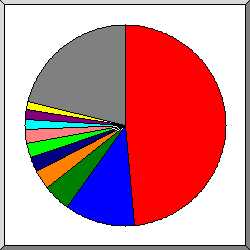
Поделено на сектора по количеству обращений.
95
 193.106
193.106
 106
106
 46
46
 40
40
 5
5
 37
37
 123
123
 66.249
66.249
 66.102
66.102
 другое
другое
Показано первые 20 организаций - по количеству обращений, отсортировано по количеству обращений.
| запросы | %байт | организация |
|---|---|---|
| 6472 | 32,84% | 95 |
| 1511 | 28,92% | 193.106 |
| 589 | 3,60% | 106 |
| 418 | 4,67% | 46 |
| 329 | 7,22% | 40 |
| 303 | 1,01% | 5 |
| 296 | 0,39% | 37 |
| 228 | 2,16% | 123 |
| 211 | 0,95% | 66.249 |
| 175 | 1,49% | 66.102 |
| 163 | 2,34% | 111 |
| 160 | 0,38% | 180.76 |
| 157 | 0,29% | 54 |
| 154 | 0,31% | 141.8 |
| 151 | 0,35% | 42 |
| 103 | 0,29% | 109 |
| 100 | 0,88% | 193.105 |
| 85 | 0,28% | 52 |
| 84 | 1,24% | 36 |
| 72 | 0,64% | 167.114 |
| 1593 | 9,76% | [не распознано: 204 организаций] |
(Переход: Вверх | Основная Информация | Статистика по месяцам | Статистика по дням недели | Статистика по времени суток | Статистика по доменам | Статистика по организациям | Статистика по перенаправляющим ссылкам | Статистика отказов по ссылкам | Статистика по ссылающимся сайтам | Статистика по браузерам (подробная) | Статистика по браузерам (суммарная) | Статистика по операционным системам | Статистика по коду возврата | Статистика по размерам файлов | Статистика по типам файлов | Статистика по директориям | Статистика по запросам)
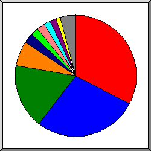
Поделено на сектора количество перенаправленных запросов.
http://greenbro.net/
http://www.greenbro.net/
http://www.sogou.com/web
http://greenbro.net/registration/registration.php
http://www.google.com.hk/
http://greenbro.net/scripts/contact.php
http://www.greenbro.net/index.php
http://greenbro.net/wp-login.php
http://www.greenbro.net/scripts/clothes.php
http://greenbro.net/favicon.ico
другое
Список ссылающихся URLей, отсортировано количество перенаправленных запросов.
(Переход: Вверх | Основная Информация | Статистика по месяцам | Статистика по дням недели | Статистика по времени суток | Статистика по доменам | Статистика по организациям | Статистика по перенаправляющим ссылкам | Статистика отказов по ссылкам | Статистика по ссылающимся сайтам | Статистика по браузерам (подробная) | Статистика по браузерам (суммарная) | Статистика по операционным системам | Статистика по коду возврата | Статистика по размерам файлов | Статистика по типам файлов | Статистика по директориям | Статистика по запросам)
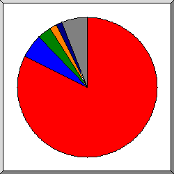
Поделено на сектора по количеству отказов.
http://greenbro.net/scripts/goods.php
http://greenbro.net/
http://greenbro.net/wp-login.php
http://greenbro.net/index.php
http://greenbro.net/phpmyadmin/index.php
другое
Показано первые 30 ссылающихся URLs - по количеству отказов, отсортировано по количеству отказов.
(Переход: Вверх | Основная Информация | Статистика по месяцам | Статистика по дням недели | Статистика по времени суток | Статистика по доменам | Статистика по организациям | Статистика по перенаправляющим ссылкам | Статистика отказов по ссылкам | Статистика по ссылающимся сайтам | Статистика по браузерам (подробная) | Статистика по браузерам (суммарная) | Статистика по операционным системам | Статистика по коду возврата | Статистика по размерам файлов | Статистика по типам файлов | Статистика по директориям | Статистика по запросам)
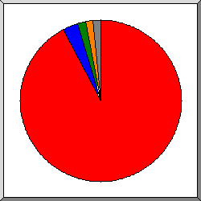
Поделено на сектора по количеству обращений.
http://greenbro.net/
http://www.greenbro.net/
http://www.sogou.com/
https://uptime.com/
другое
Список ссылающихся сайтов, отсортировано по количеству обращений.
| запросы | сайт |
|---|---|
| 8902 | http://greenbro.net/ |
| 309 | http://www.greenbro.net/ |
| 149 | http://www.sogou.com/ |
| 135 | https://uptime.com/ |
| 74 | http://mail.greenbro.net/ |
| 20 | http://burger-imperia.com/ |
| 15 | http://pizza-imperia.com/ |
| 8 | http://hundejo.com/ |
| 7 | android-app://org.telegram.messenger/ |
| 7 | http://www.google.com/ |
| 6 | https://www.google.com/ |
| 5 | https://www.facebook.com/ |
| 3 | http://pizza-tycoon.com/ |
| 2 | https://yandex.ru/ |
| 2 | http://www.marinetraffic.com/ |
| 1 | http://search.aol.com/ |
| 1 | android-app://com.google.android.googlequicksearchbox/ |
| 1 | http://www.google.com.hk/ |
| 1 | https://wap.sogou.com/ |
(Переход: Вверх | Основная Информация | Статистика по месяцам | Статистика по дням недели | Статистика по времени суток | Статистика по доменам | Статистика по организациям | Статистика по перенаправляющим ссылкам | Статистика отказов по ссылкам | Статистика по ссылающимся сайтам | Статистика по браузерам (подробная) | Статистика по браузерам (суммарная) | Статистика по операционным системам | Статистика по коду возврата | Статистика по размерам файлов | Статистика по типам файлов | Статистика по директориям | Статистика по запросам)
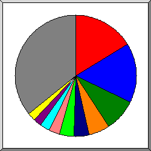
Поделено на сектора по количеству обращений к странице.
Sogou web spider/4.0(+http://www.sogou.com/docs/help/webmasters.htm#07)
Mozilla/5.0 (X11; Linux x86_64) AppleWebKit/537.36 (KHTML, like Gecko) Chrome/73.0.3683.75 Safari/537.36
Mozilla/5.0 (compatible; YandexBot/3.0; +http://yandex.com/bots)
Mozilla/5.0 (compatible; MJ12bot/v1.4.8; http://mj12bot.com/)
Mozilla/5.0 (Linux; Android 7.1.1; SM-J510H Build/NMF26X) AppleWebKit/537.36 (KHTML, like Gecko) Chrome/60.0.3112.116 Mobile Safari/537.36
Mozilla/5.0 (compatible; Uptimebot/1.0; +http://www.uptime.com/uptimebot)
Go-http-client/1.1
Mozilla/5.0 (Windows NT 6.1; WOW64) AppleWebKit/537.36 (KHTML, like Gecko) Chrome/50.0.2661.102 Safari/537.36; 360Spider
Mozilla/5.0 (compatible; Googlebot/2.1; +http://www.google.com/bot.html)
Mozilla/5.0 (compatible; Baiduspider/2.0; +http://www.baidu.com/search/spider.html)
другое
Показано первые 40 браузеров - по количеству обращений к странице, отсортировано по количеству обращений к странице.
| запросы | страниц | браузер |
|---|---|---|
| 644 | 573 | Sogou web spider/4.0(+http://www.sogou.com/docs/help/webmasters.htm#07) |
| 5387 | 551 | Mozilla/5.0 (X11; Linux x86_64) AppleWebKit/537.36 (KHTML, like Gecko) Chrome/73.0.3683.75 Safari/537.36 |
| 357 | 299 | Mozilla/5.0 (compatible; YandexBot/3.0; +http://yandex.com/bots) |
| 214 | 196 | Mozilla/5.0 (compatible; MJ12bot/v1.4.8; http://mj12bot.com/) |
| 693 | 136 | Mozilla/5.0 (Linux; Android 7.1.1; SM-J510H Build/NMF26X) AppleWebKit/537.36 (KHTML, like Gecko) Chrome/60.0.3112.116 Mobile Safari/537.36 |
| 135 | 135 | Mozilla/5.0 (compatible; Uptimebot/1.0; +http://www.uptime.com/uptimebot) |
| 104 | 102 | Go-http-client/1.1 |
| 92 | 91 | Mozilla/5.0 (Windows NT 6.1; WOW64) AppleWebKit/537.36 (KHTML, like Gecko) Chrome/50.0.2661.102 Safari/537.36; 360Spider |
| 92 | 78 | Mozilla/5.0 (compatible; Googlebot/2.1; +http://www.google.com/bot.html) |
| 161 | 72 | Mozilla/5.0 (compatible; Baiduspider/2.0; +http://www.baidu.com/search/spider.html) |
| 70 | 69 | Mozilla/5.0 (iPhone; CPU iPhone OS 7_0 like Mac OS X) AppleWebKit/537.51.1 (KHTML, like Gecko) Version/7.0 Mobile/11A465 Safari/9537.53 (compatible; bingbot/2.0; +http://www.bing.com/bingbot.htm) |
| 91 | 67 | Mozilla/5.0 (compatible; MegaIndex.ru/2.0; +http://megaindex.com/crawler) |
| 64 | 62 | Mozilla/5.0 (Macintosh; Intel Mac OS X 10.11; rv:47.0) Gecko/20100101 Firefox/47.0 |
| 242 | 60 | Mozilla/4.0 (compatible; MSIE 7.0; Windows NT 5.1; Trident/4.0; SE 2.X MetaSr 1.0; SE 2.X MetaSr 1.0; .NET CLR 2.0.50727; SE 2.X MetaSr 1.0) |
| 62 | 60 | Mozilla/5.0 (Macintosh; Intel Mac OS X 10_12_6) AppleWebKit/537.36 (KHTML, like Gecko) Chrome/61.0.3163.100 Safari/537.36 |
| 85 | 48 | Mozilla/5.0 (Linux; Android 6.0.1; Nexus 5X Build/MMB29P) AppleWebKit/537.36 (KHTML, like Gecko) Chrome/41.0.2272.96 Mobile Safari/537.36 (compatible; Googlebot/2.1; +http://www.google.com/bot.html) |
| 46 | 46 | Mozilla/5.0 (Windows NT 6.1; WOW64) AppleWebKit/537.36 (KHTML, like Gecko) Chrome/41.0.2272.89 Safari/537.36 |
| 75 | 43 | Mozilla/5.0 (compatible; Dataprovider.com) |
| 28 | 27 | Mozilla/5.0 (Windows NT 10.0; WOW64) AppleWebKit/537.36 (KHTML, like Gecko) Chrome/66.0.3359.117 Safari/537.36 |
| 27 | 27 | Mozilla/5.0 (compatible; Nimbostratus-Bot/v1.3.2; http://cloudsystemnetworks.com) |
| 65 | 26 | Mozilla/5.0 (compatible; bingbot/2.0; +http://www.bing.com/bingbot.htm) |
| 23 | 23 | Mozilla/5.0 (compatible; AhrefsBot/5.2; +http://ahrefs.com/robot/) |
| 32 | 23 | Mozilla/5.0 (Macintosh; Intel Mac OS X 10_9_2) AppleWebKit/537.36 (KHTML, like Gecko) Chrome/38.0.2125.111 Safari/537.36 |
| 20 | 20 | Mozilla/5.0 (Windows NT 10.0; Win64; x64) AppleWebKit/537.36 (KHTML, like Gecko) Chrome/63.0.3239.132 Safari/537.36 |
| 674 | 18 | Mozilla/5.0 (Windows NT 5.1) AppleWebKit/537.36 (KHTML, like Gecko) Chrome/49.0.2623.112 Safari/537.36 |
| 22 | 17 | Mozilla/5.0 (Windows NT 6.1) AppleWebKit/537.36 (KHTML, like Gecko) Chrome/42.0.2311.90 Safari/537.36 |
| 17 | 17 | Mozilla/5.0 (Windows NT 6.1; WOW64) AppleWebKit/537.36 (KHTML, like Gecko) Chrome/50.0.2661.102 Safari/537.36 |
| 85 | 16 | Mozilla/5.0 (compatible; AhrefsBot/6.1; +http://ahrefs.com/robot/) |
| 521 | 16 | Mozilla/5.0 (Windows NT 10.0; Win64; x64) AppleWebKit/537.36 (KHTML, like Gecko) Chrome/73.0.3683.86 Safari/537.36 |
| 1184 | 13 | Mozilla/5.0 (Windows NT 10.0; Win64; x64) AppleWebKit/537.36 (KHTML, like Gecko) Chrome/73.0.3683.103 Safari/537.36 |
| 12 | 12 | python-requests/2.21.0 |
| 13 | 12 | Mozilla/5.0 (Windows NT 5.1; Win64; x64) AppleWebKit/537.36 (KHTML, like Gecko) Chrome/55.0.2883.87 Safari/537.36 |
| 12 | 12 | Mozilla/5.0 (X11; Linux x86_64) AppleWebKit/537.36 (KHTML, like Gecko) Chrome/49.0.2623.75 Safari/537.36 Google Favicon |
| 13 | 11 | Mozilla/5.0 (Windows NT 10.0; WOW64) AppleWebKit/537.36 (KHTML, like Gecko) Chrome/49.0.2623.75 Safari/537.36 OPR/36.0.2130.32 |
| 11 | 11 | Mozilla/5.0 (Windows NT 6.1; WOW64) AppleWebKit/537.36 (KHTML, like Gecko) Chrome/34.0.1847.131 Safari/537.36 |
| 11 | 11 | Opera/9.80 (Windows NT 5.1; U; en) Presto/2.10.289 Version/12.01 |
| 153 | 11 | Mozilla/5.0 (Linux; Android 8.1.0; INE-LX1) AppleWebKit/537.36 (KHTML, like Gecko) Chrome/73.0.3683.90 Mobile Safari/537.36 |
| 91 | 10 | Mozilla/5.0 (Windows NT 6.1; Win64; x64) AppleWebKit/537.36 (KHTML, like Gecko) Chrome/74.0.3729.169 Safari/537.36 |
| 10 | 10 | Mozilla/5.0 (Windows NT 6.0) AppleWebKit/535.1 (KHTML, like Gecko) Chrome/13.0.782.112 Safari/535.1 |
| 19 | 10 | Mozilla/5.0 (Windows NT 6.0) AppleWebKit/537.36 (KHTML, like Gecko) Chrome/34.0.1847.116 Safari/537.36 |
| 1658 | 439 | [не распознано: 243 браузеров] |
(Переход: Вверх | Основная Информация | Статистика по месяцам | Статистика по дням недели | Статистика по времени суток | Статистика по доменам | Статистика по организациям | Статистика по перенаправляющим ссылкам | Статистика отказов по ссылкам | Статистика по ссылающимся сайтам | Статистика по браузерам (подробная) | Статистика по браузерам (суммарная) | Статистика по операционным системам | Статистика по коду возврата | Статистика по размерам файлов | Статистика по типам файлов | Статистика по директориям | Статистика по запросам)
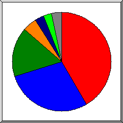
Поделено на сектора по количеству обращений к странице.
Safari
Netscape (compatible)
Sogou web spider
Firefox
Go-http-client
MSIE
другое
Показано первые 20 браузеров - по количеству обращений к странице, отсортировано по количеству обращений к странице.
| N | запросы | страниц | браузер |
|---|---|---|---|
| 1 | 10190 | 1447 | Safari |
| 9831 | 1352 | Safari/537 | |
| 305 | 69 | Safari/9537 | |
| 11 | 11 | Safari/535 | |
| 32 | 5 | Safari/604 | |
| 4 | 3 | Safari/602 | |
| 2 | 2 | Safari/605 | |
| 2 | 2 | Safari/533 | |
| 2 | 2 | Safari/534 | |
| 1 | 1 | Safari/532 | |
| 2 | 1406 | 990 | Netscape (compatible) |
| 3 | 644 | 573 | Sogou web spider |
| 644 | 573 | Sogou web spider/4 | |
| 4 | 223 | 159 | Firefox |
| 65 | 63 | Firefox/47 | |
| 20 | 11 | Firefox/3 | |
| 10 | 10 | Firefox/38 | |
| 19 | 9 | Firefox/50 | |
| 9 | 9 | Firefox/59 | |
| 9 | 9 | Firefox/25 | |
| 6 | 6 | Firefox/64 | |
| 6 | 6 | Firefox/65 | |
| 3 | 3 | Firefox/53 | |
| 3 | 3 | Firefox/56 | |
| 5 | 104 | 102 | Go-http-client |
| 104 | 102 | Go-http-client/1 | |
| 6 | 553 | 93 | MSIE |
| 419 | 65 | MSIE/7 | |
| 75 | 9 | MSIE/6 | |
| 17 | 7 | MSIE/8 | |
| 17 | 7 | MSIE/9 | |
| 23 | 3 | MSIE/10 | |
| 7 | 81 | 25 | Mozilla |
| 3 | 3 | Mozilla/1 | |
| 8 | 19 | 19 | python-requests |
| 19 | 19 | python-requests/2 | |
| 9 | 17 | 17 | Opera |
| 17 | 17 | Opera/9 | |
| 10 | 20 | 10 | CheckMarkNetwork |
| 20 | 10 | CheckMarkNetwork/1 | |
| 11 | 14 | 9 | panscient.com |
| 12 | 8 | 8 | Scrapy |
| 8 | 8 | Scrapy/1 | |
| 13 | 6 | 6 | CATExplorador |
| 6 | 6 | CATExplorador/1 | |
| 14 | 5 | 5 | PHPCrawl |
| 15 | 4 | 4 | Python |
| 4 | 4 | Python/3 | |
| 16 | 3 | 3 | Python-urllib |
| 2 | 2 | Python-urllib/2 | |
| 1 | 1 | Python-urllib/3 | |
| 17 | 2 | 2 | di-cloud-parser |
| 18 | 2 | 2 | curl |
| 2 | 2 | curl/7 | |
| 19 | 2 | 2 | SafeDNSBot (https: |
| 2 | 2 | SafeDNSBot (https://www | |
| 20 | 1 | 1 | GuzzleHttp |
| 1 | 1 | GuzzleHttp/6 | |
| 11 | 3 | [не распознано: 6 браузеров] |
(Переход: Вверх | Основная Информация | Статистика по месяцам | Статистика по дням недели | Статистика по времени суток | Статистика по доменам | Статистика по организациям | Статистика по перенаправляющим ссылкам | Статистика отказов по ссылкам | Статистика по ссылающимся сайтам | Статистика по браузерам (подробная) | Статистика по браузерам (суммарная) | Статистика по операционным системам | Статистика по коду возврата | Статистика по размерам файлов | Статистика по типам файлов | Статистика по директориям | Статистика по запросам)
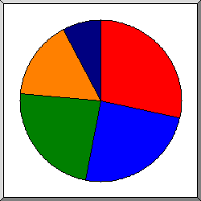
Поделено на сектора по количеству обращений к странице.
Неизвестная ОС
роботы
Unix
Windows
Macintosh
Список операционных систем, отсортировано по количеству обращений к странице.
| N | запросы | страниц | ОС |
|---|---|---|---|
| 1 | 1273 | 991 | Неизвестная ОС |
| 2 | 1130 | 853 | роботы |
| 3 | 6524 | 818 | Unix |
| 6524 | 818 | Linux | |
| 4 | 3838 | 550 | Windows |
| 735 | 248 | Неизвестная Windows-система | |
| 2052 | 167 | Windows NT | |
| 988 | 133 | Windows XP | |
| 3 | 2 | Windows Server 2003 | |
| 60 | 0 | Windows 2000 | |
| 5 | 550 | 268 | Macintosh |
(Переход: Вверх | Основная Информация | Статистика по месяцам | Статистика по дням недели | Статистика по времени суток | Статистика по доменам | Статистика по организациям | Статистика по перенаправляющим ссылкам | Статистика отказов по ссылкам | Статистика по ссылающимся сайтам | Статистика по браузерам (подробная) | Статистика по браузерам (суммарная) | Статистика по операционным системам | Статистика по коду возврата | Статистика по размерам файлов | Статистика по типам файлов | Статистика по директориям | Статистика по запросам)
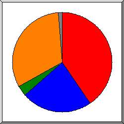
Поделено на сектора по количеству обращений.
200 OK
301 Document moved permanently
304 Not modified since last retrieval
404 Document not found
другое
Список кодов возврата, отсортированный по порядковым номерам.
| запросы | код статус |
|---|---|
| 12296 | 200 OK |
| 14 | 206 Partial content |
| 6611 | 301 Document moved permanently |
| 293 | 302 Document found elsewhere |
| 1044 | 304 Not modified since last retrieval |
| 9693 | 404 Document not found |
| 42 | 500 Internal server error |
(Переход: Вверх | Основная Информация | Статистика по месяцам | Статистика по дням недели | Статистика по времени суток | Статистика по доменам | Статистика по организациям | Статистика по перенаправляющим ссылкам | Статистика отказов по ссылкам | Статистика по ссылающимся сайтам | Статистика по браузерам (подробная) | Статистика по браузерам (суммарная) | Статистика по операционным системам | Статистика по коду возврата | Статистика по размерам файлов | Статистика по типам файлов | Статистика по директориям | Статистика по запросам)
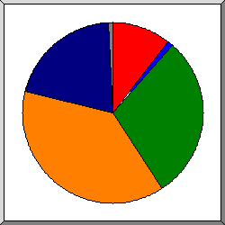
Поделено на сектора по количеству обращений.
0
1B- 10B
101B- 1kB
1kB- 10kB
10kB-100kB
другое
| размер | запросы | %байт |
|---|---|---|
| 0 | 1406 | |
| 1B- 10B | 155 | |
| 11B- 100B | 20 | |
| 101B- 1kB | 3884 | 1,33% |
| 1kB- 10kB | 5082 | 8,96% |
| 10kB-100kB | 2736 | 80,47% |
| 100kB- 1MB | 71 | 9,23% |
(Переход: Вверх | Основная Информация | Статистика по месяцам | Статистика по дням недели | Статистика по времени суток | Статистика по доменам | Статистика по организациям | Статистика по перенаправляющим ссылкам | Статистика отказов по ссылкам | Статистика по ссылающимся сайтам | Статистика по браузерам (подробная) | Статистика по браузерам (суммарная) | Статистика по операционным системам | Статистика по коду возврата | Статистика по размерам файлов | Статистика по типам файлов | Статистика по директориям | Статистика по запросам)
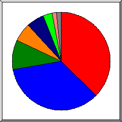
Поделено на сектора по суммарному трафику.
.jpg [JPEG graphics]
.js [JavaScript code]
[директории]
.css [Cascading Style Sheets]
.woff2
.php [PHP]
.png [PNG graphics]
другое
Список расширений на которые приходиться, как минимум 0,1% трафика, отсортировано по суммарному трафику.
| запросы | %байт | расширение |
|---|---|---|
| 1450 | 37,40% | .jpg [JPEG graphics] |
| 1462 | 34,96% | .js [JavaScript code] |
| 3519 | 9,58% | [директории] |
| 2418 | 6,30% | .css [Cascading Style Sheets] |
| 381 | 5,76% | .woff2 |
| 2830 | 3,05% | .php [PHP] |
| 789 | 1,48% | .png [PNG graphics] |
| 183 | 0,68% | .cgi [CGI scripts] |
| 24 | 0,36% | .ttf |
| 48 | 0,23% | .jpeg [JPEG graphics] |
| 243 | 0,18% | .svg |
| 7 | 0,02% | [не распознано: 2 расширений] |
(Переход: Вверх | Основная Информация | Статистика по месяцам | Статистика по дням недели | Статистика по времени суток | Статистика по доменам | Статистика по организациям | Статистика по перенаправляющим ссылкам | Статистика отказов по ссылкам | Статистика по ссылающимся сайтам | Статистика по браузерам (подробная) | Статистика по браузерам (суммарная) | Статистика по операционным системам | Статистика по коду возврата | Статистика по размерам файлов | Статистика по типам файлов | Статистика по директориям | Статистика по запросам)
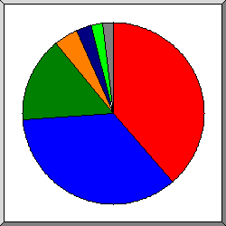
Поделено на сектора по суммарному трафику.
/lib/
/images/
[корневой каталог]
/other_css/
/fonts/
/scripts/
другое
Список директорий на которые приходиться, как минимум 0,01% трафика, отсортировано по суммарному трафику.
| запросы | %байт | директория |
|---|---|---|
| 1399 | 38,62% | /lib/ |
| 2951 | 35,20% | /images/ |
| 3509 | 15,22% | [корневой каталог] |
| 1492 | 4,23% | /other_css/ |
| 309 | 2,84% | /fonts/ |
| 2423 | 2,02% | /scripts/ |
| 599 | 0,84% | /js/ |
| 183 | 0,68% | /cgi-sys/ |
| 132 | 0,16% | /test/ |
| 77 | 0,09% | /registration/ |
| 172 | 0,07% | /green64/ |
| 103 | 0,02% | /uploads/ |
| 5 | [не распознано: 2 директорий] |
(Переход: Вверх | Основная Информация | Статистика по месяцам | Статистика по дням недели | Статистика по времени суток | Статистика по доменам | Статистика по организациям | Статистика по перенаправляющим ссылкам | Статистика отказов по ссылкам | Статистика по ссылающимся сайтам | Статистика по браузерам (подробная) | Статистика по браузерам (суммарная) | Статистика по операционным системам | Статистика по коду возврата | Статистика по размерам файлов | Статистика по типам файлов | Статистика по директориям | Статистика по запросам)
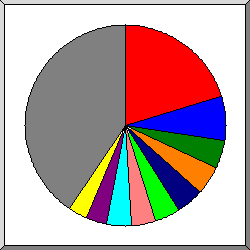
Поделено на сектора по количеству обращений.
/
/scripts/goods.php
/scripts/description.php
/js/cart-script.js
/images/favicon-32x32.png
/lib/jquery-3.3.1.js
/images/
/other_css/goodsNew.css
/images/oil.jpg
/cssgb.css
другое
Список файлов на которые приходиться, как минимум 20 запросов, отсортировано по количеству обращений.
| запросы | %байт | последнее время | файл |
|---|---|---|---|
| 2716 | 9,23% | 25 дек 19 04:58 | / |
| 31 | 0,07% | 24 июн 19 21:09 | /?C=M;O=A |
| 30 | 0,07% | 23 июн 19 07:33 | /?C=S;O=A |
| 23 | 0,18% | 23 июн 19 07:33 | /?C=D;O=A |
| 21 | 0,05% | 23 июн 19 07:33 | /?C=N;O=D |
| 19 | 0,05% | 23 июн 19 07:33 | /?C=N;O=A |
| 16 | 0,04% | 23 июн 19 07:33 | /?C=D;O=D |
| 16 | 15 фев 19 14:48 | /?54.36.148.168 | |
| 14 | 0,04% | 23 июн 19 07:33 | /?C=M;O=D |
| 14 | 0,04% | 23 июн 19 07:33 | /?C=S;O=D |
| 13 | 0,08% | 22 мая 19 15:12 | /?66.249.64.73 |
| 955 | 1,39% | 26 июн 19 13:15 | /scripts/goods.php |
| 603 | 0,09% | 26 июн 19 08:34 | /scripts/description.php |
| 599 | 0,84% | 27 сен 19 09:42 | /js/cart-script.js |
| 598 | 0,21% | 26 июн 19 11:15 | /images/favicon-32x32.png |
| 546 | 30,86% | 27 сен 19 09:42 | /lib/jquery-3.3.1.js |
| 527 | 0,26% | 26 июн 19 13:15 | /images/ |
| 515 | 0,61% | 27 сен 19 09:42 | /other_css/goodsNew.css |
| 464 | 3,99% | 26 июн 19 13:14 | /images/oil.jpg |
| 395 | 0,71% | 23 июн 19 22:19 | /cssgb.css |
| 357 | 3,01% | 27 сен 19 09:42 | /other_css/bootstrap-grid.min.css |
| 341 | 0,51% | 27 сен 19 09:42 | /other_css/normalize.css |
| 335 | 0,29% | 27 сен 19 09:42 | /lib/simplebar.css |
| 317 | 3,26% | 27 сен 19 09:42 | /lib/simplebar.min.js |
| 306 | 12,45% | 23 июн 19 22:19 | /images/fantasy.jpg |
| 302 | 6,31% | 26 июн 19 13:14 | /images/flour.jpg |
| 283 | 2,46% | 27 сен 19 09:42 | /fonts/OleoScript/Oleoscript.woff2 |
| 260 | 26 июн 19 08:34 | /scripts/dbhandler.php | |
| 246 | 9,79% | 23 июн 19 22:19 | /images/logo1.jpg |
| 242 | 0,10% | 23 июн 19 22:19 | /other_css/goods.css |
| 232 | 0,17% | 27 сен 19 09:42 | /images/shopping-basket.svg |
| 194 | 0,77% | 23 дек 19 19:42 | /index.php |
| 10 | 0,01% | 8 июн 19 05:00 | /index.php?option=com_user&task=register |
| 183 | 0,68% | 7 дек 19 22:32 | /cgi-sys/suspendedpage.cgi |
| 135 | 0,12% | 26 июн 19 13:14 | /scripts/foods.php |
| 132 | 0,16% | 9 июн 19 13:20 | /test/tgoods.php |
| 106 | 4,35% | 21 мая 19 07:39 | /logo1.jpg |
| 103 | 0,91% | 23 июн 19 22:19 | /lib/fontawesome/css/all.css |
| 99 | 0,09% | 26 июн 19 13:14 | /scripts/clothes.php |
| 98 | 3,30% | 20 апр 19 22:43 | /lib/fontawesome/webfonts/fa-solid-900.woff2 |
| 93 | 0,16% | 7 янв 19 22:25 | /phpMM.css |
| 83 | 0,11% | 26 июн 19 13:15 | /scripts/contact.php |
| 76 | 0,07% | 26 июн 19 13:15 | /scripts/books.php |
| 75 | 0,04% | 12 июн 19 11:20 | /scripts/other.php |
| 71 | 0,04% | 18 мар 19 09:30 | /green64/ |
| 57 | 0,01% | 12 апр 19 15:11 | /uploads/ |
| 55 | 0,01% | 18 мар 19 09:24 | /green64/uploads/ |
| 48 | 0,23% | 7 апр 19 23:40 | /images/flour1.jpeg |
| 47 | 0,06% | 26 июн 19 13:15 | /scripts/allthings.php |
| 46 | 0,01% | 18 мар 19 09:24 | /green64/uploads/profile_pics/ |
| 46 | 0,01% | 1 мар 19 23:43 | /uploads/profile_pick/ |
| 38 | 0,02% | 14 июн 19 11:48 | /scripts/recipe.php |
| 37 | 26 июн 19 13:14 | /other_css/registration_css.css | |
| 35 | 0,06% | 26 июн 19 13:15 | /registration/registration.php |
| 34 | 0,06% | 7 янв 19 22:25 | /images/tmm_php-mysql_example-arrow.png |
| 34 | 0,06% | 7 янв 19 22:25 | /images/tmm_php-mysql_background.png |
| 34 | 0,08% | 7 янв 19 22:25 | /images/tmm_php-mysql_footer.png |
| 32 | 0,03% | 23 июн 19 09:57 | /images/apple-touch-icon.png |
| 28 | 0,01% | 24 июн 19 21:18 | /scripts/callback_second.php |
| 28 | 0,15% | 7 янв 19 22:25 | /images/tmm_php-mysql_banner.png |
| 27 | 0,03% | 14 мая 19 17:19 | /registration/unsuccesfull.php |
| 24 | 0,36% | 26 июн 19 09:07 | /fonts/OleoScript/Oleoscript.ttf |
| 117 | 1,47% | 23 дек 19 22:52 | [не распознано: 26 файлов] |